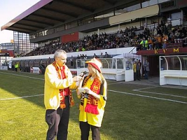
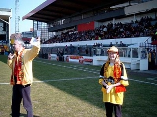

|
Overhandiging €600 aan Mechelen |

Rodasupporters hadden eerder 600 euro bijeen
gebracht voor het noodlijdende KV Mechelen.
Dit bedrag werd zaterdag in de Kick Off aan Pat
en Melleke overhandigd na de wedstrijd tegen
NEC. De dag erna wordt het geld voor aanvang
vat geld voor aanvang
van KVM-La Louvière overhandigd aan de club.

Na een korte speech van Melleke gaven de
Mechelnaars een staande ovatie voor RJC en
werden er minutenlang Roda-liederen gezongen
zoals "Roda bedankt".